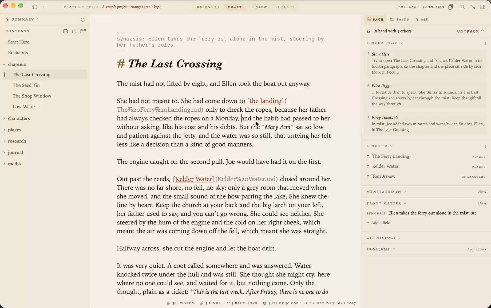
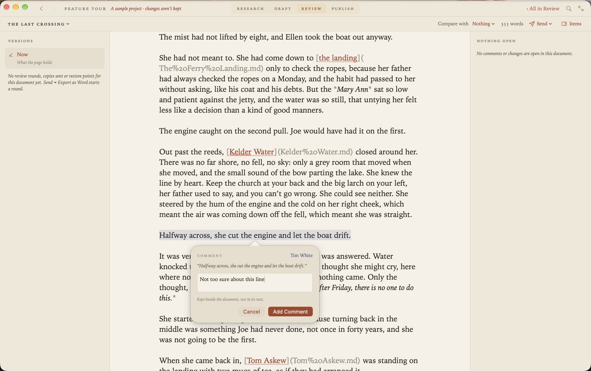

A Markdown editor for Mac, made for long writing
Most Markdown editors for the Mac are made for notes, or for one document at a time. Grasmere is made for the long things, such as a thesis, a book or a report with sources. It takes a project from research to a finished manuscript, in plain Markdown files on your Mac.

Plain files, in folders you choose
Every document is an ordinary .md file. There’s no database, no special syntax and nothing to export, so your documents read as well in any other editor, on GitHub or in ten years’ time. Open a folder and it’s a project. iCloud Drive, Dropbox and git all work, because it’s only a folder.
The page
You write plain Markdown, and what you type is what’s saved. The page styles headings, emphasis, lists and links as you go, and keeps the marks visible but faint.
- Tables are drawn as tables, and edited a cell at a time.
- Mermaid diagrams are drawn beneath their code.
- Code blocks are coloured by language.
- Footnotes sit back from the text until the cursor is in them.
- Focus mode keeps the line you’re on in the middle of the window and fades the rest.
- Split view puts two documents side by side.
There are five themes, light and dark, each with its own type.
Links that don’t break
Link documents with ordinary Markdown links. Rename a document or move it to another folder, in Grasmere or in the Finder, and every link to it is rewritten to match. Each document shows the others that link to it.
Four stages, from plan to publication
The title bar has four stages, and they’re the reason to choose Grasmere over a plainer editor.
- Research. Save web pages as Markdown, add papers by DOI and books by ISBN, import a Zotero library, and highlight what you read.
- Draft. Write, with citations a keystroke away, tasks in the text and a word target counting down.
- Review. Send a Word file to someone who uses Word, and bring their tracked changes and comments back into your Markdown.
- Publish. A typeset PDF in manuscript or book format, a Word document, or a website, with citations in APA, Harvard, Chicago or MLA.

At home on the Mac
Grasmere is a native Mac app from the Mac App Store. Press Space on a Markdown file in the Finder and Quick Look shows it set as Grasmere sets it. Share a page from Safari to save it into a project. Capture a thought from any app with a keystroke, or from the menu bar. Its actions are in the Shortcuts app, and so on the command line too.
Private
There’s no account to make and nothing is collected. Grasmere has no server. The AI tools are optional and use Apple’s on-device model by default. They answer questions from your own documents and ask you questions about your writing. They don’t write it for you.
The price
Free for 14 days, then $14.99 once. No subscription.
Who it isn’t for
It’s better to know before you download.
- It needs macOS 15 or later.
- There’s no iPhone, iPad or Windows version.
- There are no plugins. Shortcuts can run when documents are saved, made or renamed.
- It uses standard Markdown links and doesn’t follow
[[wiki-links]], though it converts them. - Two people can’t edit a document at the same moment.
Questions
Will it open my existing Markdown files?
Yes. Open the folder they’re in, or double-click one in the Finder. They’re left as they are.
Can I keep using my other editor too?
Yes. The files are plain Markdown. If another app changes a document you’re editing, Grasmere asks which version to keep.
Is there a way to try it first?
The trial is free for 14 days. Help ▸ Feature Tour opens a sample project, a short novel, with one thing to try at a time.
Start writing today.
Open a folder of Markdown files, or an empty one. The trial is free for 14 days.
Download for macOS Free for 14 days, then $14.99 once · macOS 15+Related
- A Ulysses alternative you buy once
- An iA Writer alternative for long writing
- What Grasmere does with your Markdown
- Markdown for projects
- Writing a book in Markdown
- Markdown to PDF on a Mac
- Why Grasmere?
- More on writing in Markdown
Last updated .